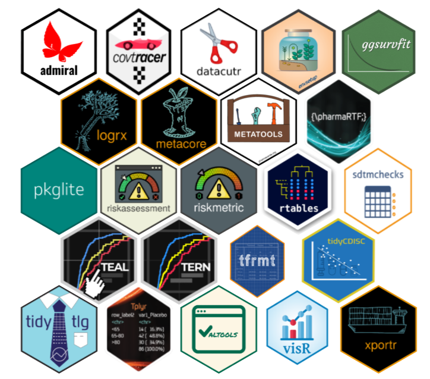

The pharmaverse: from motivation to present
Human history and pharmaverse context
Since the Australian Aboriginal, the earliest peoples recorded to have inhabited the Earth and who have been in Australia for at least 65,000 to 80,000 years (Encyclopædia Britannica), human beings live in group. Whether to protect yourself, increase your life expectancy or simply share tasks.
For most aspects of life, it doesn’t make sense to think, act or work alone for two main reasons:
You will spend more energy and time;
Someone else may be facing (or have faced) the same situation.
The English poet John Donne used to say “No man is an island entire of itself; every man is a piece of the continent, a part of the main;”. I can’t disagree with him. And I dare say that Ari Siggaard Knoph (Novo Nordisk), Michael Rimler (GSK), Michael Stackhouse (Atorus), Ross Farrugia (Roche), and Sumesh Kalappurakal (Janssen) can’t disagree with him either. They are the founders of pharmaverse, members of its Council and kindly shared their memories of how independent companies, in mid-2020, worked together in the creation of a set of packages developed to support the clinical reporting pipeline.
If you are not familiar with this pipeline, the important thing to know is that, in a nutshell, pharmaceutical companies must follow a bunch of standardized procedures and formats (from Clinical Data Interchange Standards Consortium, CDISC) when submitting clinical results to Health Authorities. The focus is on this: different companies seeking the same standards for outputs.
Paraphrasing Ross Farrugia (Roche) Breaking boundaries through open-source collaboration presentation in R/Pharma 2022 and thinking of the development of a new drug, we are talking about a “post-competitive” scenario: the drug has already been discovered and the companies should “just” produce and deliver standardized results.
Clinical reporting outputs
Rationally, we can say that companies face the same challenges in these steps of the process. Not so intuitively, we can also say they were working in silos on that before 2018. Just as Isaac Newton and Gottfried W. Leibniz independently developed the theory of infinitesimal calculus, pharmaceutical companies were independently working on R solutions for this pipeline.
But on August 16 and 17 of the mentioned year above, they gathered at the first edition of R/Pharma conference to discuss R and open-source tooling for drug development (the reasons why open-source is an advantageous approach can be found in this post written by Stefan Thoma). And according to Isabela Velásquez’s article, Pharmaverse: Packages for clinical reporting workflows, one of the most popular questions in this conference was “Is the package code available or on CRAN?”.
Well, many of them were. And not necessarily at that date, but just to mention a few: pharmaRTF and Tplyr from Atorus, r2rtf from Merck, rtables from Roche, etc. The thing is that, overall, there were almost 10000 other packages as well (today, almost 20000). And that took to another two questions:
With this overwhelming number of packages on CRAN, how to find the ones related to solving “clinical reporting problems”?
Once the packages were found, how to choose which one to use among those that have the same functional purpose?
So, again, companies re-started to working in silos to find those answers. But now, in collaborative silos and with common goals: create extremely useful packages to solve pharmaceutical-specific gaps once and solve them well!
First partnerships
In 2020, Michael Stackhouse (Atorus) and Michael Rimler (GSK) talked and formed a partnership between their companies to develop a few more packages, including metacore, to read, store and manipulate metadata for ADaMs/SDTMs in a standardized object; xportr, to create submission compliant SAS transport files and perform pharma specific dataset level validation checks; and logrx (ex-timber), to build log to support reproducibility and traceability of an R script.
Around the same time, Thomas Neitmann (currently at Denali Therapeutics, then at Roche) and Michael Rimler (GSK) discovered that both were working with ADaM in R, so Thomas Neitmann (currently at Denali Therapeutics, then at Roche), Ross Farrugia (Roche) and Michael Rimler (GSK) saw an opportunity there and GSK started their partnership with Roche to build and release admiral package.
The idea of working together, the sense of community, and the appetite from organizations built more and more, with incentive and priority established up into the programming heads council.
Janssen had a huge effort in building R capabilities going on as well, by releasing tidytlg and envsetup), so eventually Michael Rimler (GSK), Michael Stackhouse (Atorus) and Ross Farrugia (Roche) formalized pharmaverse and formed the council, adding in Sumesh Kalappurakal (Janssen) and Ari Siggaard Knoph (Novo Nordisk) later joined as the fifth council member.
Release, growth and developments
At the end of their presentation “Closing the Gap: Creating an End to End R Package Toolkit for the Clinical Reporting Pipeline.”, in R/Pharma 2021, Ben Straub (GSK) and Eli Miller (Atorus) welcomed the community to the pharmaverse, a curated collection of packages developed by various pharmaceutical companies to support open-source clinical workflows.
From the outset, the name pharmaverse was chosen so that it could be a neutral home, unrelated to any company. Also, it was established as not being a consortium, which means that founders don’t own, fund, or maintain the packages. Some individuals and companies maintain them but often allowing for community contributions and being licensed permissively so that there is always a feeling of community ownership. The focus of pharmaverse early on, and today, is on inter organization cooperation, to build an environment where, if organizations identify that they have a joint problem that they want to solve, this is the right space to work on and release it.
Pharmaverse has grown a lot, at the time of writing this post we have >25 packages recommended in pharmaverse, and this has led to a partnership with PHUSE to get support from their organization and platform, and because they are eager to advance and support pharmaverse mission.
Despite all its structure, it is impossible to say that we have a single solution for each clinical reporting analysis when it comes to pharmaverse, a single pathway is impractical. Instead, it is necessary to accept viable tools fitting different pathways into pharmaverse to direct and give people options as to what might work for them. After all, even though we live together as a community, we still have our own unique internal problems.

Last updated
2024-05-02 18:53:00.779871
Details
Reuse
Citation
BibTeX citation:
@online{eugenio2023,
author = {Eugenio, Nicholas},
title = {The Pharmaverse (Hi)story},
date = {2023-08-30},
url = {https://pharmaverse.github.io/blog/posts/2023-10-10_pharmaverse_story/pharmaverse_story.html},
langid = {en}
}
For attribution, please cite this work as:
Eugenio, Nicholas. 2023. “The Pharmaverse (Hi)story.”
August 30, 2023. https://pharmaverse.github.io/blog/posts/2023-10-10_pharmaverse_story/pharmaverse_story.html.